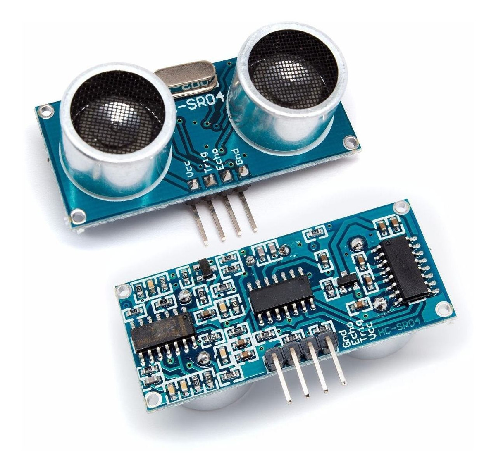

Conoce acerca del proyecto Rodesentry!
aqui escribir texto corto o quizá largo acerca del proyecto.
Alice
Detector de Microsueño
El detector de microsueño es un dispositivo que se encarga de detectar cuando el conductor de un vehículo se queda dormido al volante, para así evitar accidentes de tránsito.

Pista
La pista es un circuito impreso que se encarga de recibir las señales de los sensores y enviarlas al microcontrolador para que este las procese y determine si el conductor se encuentra en estado de microsueño.
Kart
El kart es un vehículo de cuatro ruedas que se encarga de transportar al conductor y a la pista.
Materiales

Sensor
Kits de Arduino
Tubos PVC
Tubos PVC
Tubos PVC
Tubos PVC
Tubos PVC